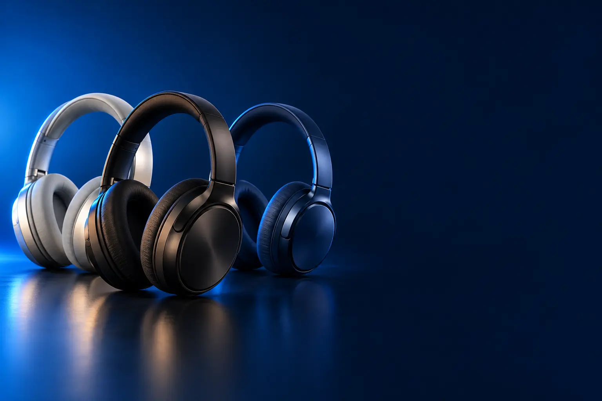

BLUETOOTH PARA O DIA A DIA
Melhor headphone Bluetooth custo-benefício
Sem fio, confortável e com bateria para a semana toda.

Melhor custo-benefício em headphone BluetoothJBL Tune 520BT
CURADORIA TECHAPROVADO · 2026
Headphone é o fone que envolve a orelha: mais conforto, mais bateria e, nos melhores, silêncio total. Separamos 13 modelos em 3 perfis e dizemos para quem cada um vale a pena.

NOSSA LEITURA
Bluetooth sem ANC é o mais barato e o que mais dura. Com ANC, você ganha silêncio em viagens. Com fio, o som mais fiel, sem bateria e sem atraso.
COMECE POR AQUI
BLUETOOTH PARA O DIA A DIA
Sem fio, confortável e com bateria para a semana toda.
CANCELAMENTO DE RUÍDO
Silêncio no avião, no ônibus e no escritório aberto.

COM FIO PARA MÚSICA E ESTÚDIO
Som fiel, sem bateria e sem atraso: para produzir e ouvir com atenção.

A FICHA, TRADUZIDA
01 - ANC
O cancelamento de ruído ativo (ANC) capta o barulho de fora com microfones e gera um som contrário que o anula. Em headphone ele rende mais, porque a concha já bloqueia parte do som.
É indispensável em avião e ônibus. ANC adaptativo ajusta a força sozinho; os melhores também reduzem vozes.
O ANC gasta bateria e pode dar sensação de pressão nos primeiros dias. Quase todos permitem desligá-lo.
02 - FORMATO
On-ear apoia sobre a orelha: é menor e mais leve. Over-ear envolve a orelha inteira: é mais confortável por horas e isola melhor.
Fechado isola o som (bom para gravar e para a rua). Aberto deixa o som sair e entrar, criando um palco mais natural, ideal para ouvir música em casa.
Quem usa óculos costuma preferir over-ear com almofadas macias, que pressionam menos as hastes.
03 - BATERIA
Headphones têm baterias grandes: de 25 a 76 horas. Na prática, quem usa 3 horas por dia carrega uma vez por semana ou menos.
Os números maiores são sempre com o ANC desligado. Com ANC, conte com cerca de dois terços.
Muitos vêm com cabo para usar sem bateria, num avião, por exemplo.
04 - COM FIO
Fone com fio não tem bateria nem atraso no som, e entrega o som exatamente como foi gravado. Por isso é o padrão de estúdios.
Para gravar podcast, editar vídeo ou tocar instrumento, o atraso do Bluetooth atrapalha. Para jogar no PC, fone com fio também responde na hora.
Celulares novos não têm entrada P2: use um adaptador USB-C para P2 de boa qualidade.
05 - CODEC
Codec é a forma como o som viaja do celular ao fone. LDAC e Hi-Res transmitem mais detalhes, mas só em celulares Android compatíveis.
No iPhone, o codec é o AAC, com boa qualidade para streaming.
Para streaming comum, a diferença é pequena. Ela aparece em música de alta resolução e em fones melhores.
A CURADORIA EM DETALHE
13 modelos da pesquisa
PERFIL · 4 MODELOS, DA ENTRADA AO TOP DE LINHA
Headphones Bluetooth sem cancelamento de ruído são os mais baratos e os que mais duram na bateria. Servem para ouvir música em casa, no trabalho e na rua, com mais conforto que um fone intra.

POR DENTRO DA ESCOLHA
Headphone leve e dobrável com almofadas de espuma de memória, conexão com dois aparelhos ao mesmo tempo, até 25 horas de bateria e carga USB-C em 2 horas.
Tem multiponto, recurso raro nessa faixa.
| ANC | Não |
|---|---|
| Bateria | Até 25 h |
| Conexão | Multiponto |
Fonte: ficha e descrição do anúncio, conferidas em 02/11/2026. Dados informados pelo fabricante.
BLUETOOTH · CUSTO-BENEFÍCIO 2 de 4
Melhor custo-benefício em headphone Bluetooth
On-ear · JBL Pure Bass · até 57 h
Ver preço na AmazonPOR DENTRO DA ESCOLHA
Headphone on-ear (apoia sobre a orelha) com som JBL Pure Bass, equalização pelo app JBL Headphones e até 57 horas de bateria com carga completa em 2 horas.
A bateria é o ponto forte: até 57 horas, com carga completa em 2 horas. O som JBL Pure Bass pode ser ajustado no app JBL Headphones. O formato on-ear é leve e apoia sobre a orelha, em vez de envolvê-la.
| Formato | On-ear |
|---|---|
| ANC | Não |
| Bateria | Até 57 h |
| App | JBL Headphones |
Fonte: ficha e descrição do anúncio, conferidas em 02/11/2026. Dados informados pelo fabricante.

BLUETOOTH · ALTERNATIVA 3 de 4
Outro caminho: over-ear, que envolve a orelha
Over-ear · cabo removível · até 76 h
Ver preço na AmazonPOR DENTRO DA ESCOLHA
A versão over-ear do Tune: as conchas envolvem a orelha em vez de apoiar sobre ela. Som JBL Pure Bass, app com equalização, até 76 horas de bateria e cabo removível para usar com fio.
Custa pouco mais que o 520BT e entrega o formato mais confortável e 19 horas a mais de bateria.
| Formato | Over-ear |
|---|---|
| ANC | Não |
| Bateria | Até 76 h |
| Cabo | Removível |
Fonte: ficha e descrição do anúncio, conferidas em 02/11/2026. Dados informados pelo fabricante.

BLUETOOTH · TOP DE LINHA 4 de 4
Top de linha Bluetooth
Som de estúdio sem fio · baixa latência · multiponto
Ver preço na AmazonPOR DENTRO DA ESCOLHA
A versão sem fio do clássico fone de estúdio ATH-M50x, com o mesmo som, modo de baixa latência para vídeo e jogos, microfones duplos com beamforming e multiponto.
Não é o mais silencioso, é o mais fiel: o foco está na qualidade do som.
| ANC | Não |
|---|---|
| Som | Referência de estúdio |
| Extras | Baixa latência, multiponto |
Fonte: ficha e descrição do anúncio, conferidas em 02/11/2026. Dados informados pelo fabricante.
PERFIL · 6 MODELOS, DA ENTRADA AO TOP DE LINHA
Nos headphones, o cancelamento de ruído funciona ainda melhor que nos fones intra, porque as conchas já isolam parte do som. São os preferidos para viagem e para trabalhar concentrado.

ANTI-RUÍDO · ENTRADA 1 de 6
ANC com 5 microfones · driver de 40 mm · até 60 h
Ver preço na AmazonPOR DENTRO DA ESCOLHA
Cancelamento de ruído com cinco microfones, driver dinâmico de 40 mm com suporte a áudio de alta resolução, Bluetooth 5.3 e até 60 horas de reprodução.
O ANC mais barato que passou nos filtros.
| ANC | Sim, 5 microfones |
|---|---|
| Driver | 40 mm |
| Bateria | Até 60 h |
Fonte: ficha e descrição do anúncio, conferidas em 02/11/2026. Dados informados pelo fabricante.
ANTI-RUÍDO · CUSTO-BENEFÍCIO 2 de 6
Melhor custo-benefício com cancelamento de ruído
ANC híbrido · 40 h com ANC · multiponto
Ver preço na AmazonPOR DENTRO DA ESCOLHA
ANC híbrido com 2 microfones internos e 2 externos, drivers de 40 mm, 40 horas com ANC ligado (60 h sem) e conexão com dois aparelhos ao mesmo tempo.
ANC híbrido, com dois microfones internos e dois externos, e drivers de 40 mm. A bateria rende 40 horas com o ANC ligado e 60 sem, e ele conecta a dois aparelhos ao mesmo tempo, como celular e notebook.
| ANC | Híbrido |
|---|---|
| Bateria | 40 h com ANC |
| Conexão | Multiponto |
Fonte: ficha e descrição do anúncio, conferidas em 02/11/2026. Dados informados pelo fabricante.

ANTI-RUÍDO · INTERMEDIÁRIO 3 de 6
ANC adaptativo · LDAC · 40 h com ANC
Ver preço na AmazonPOR DENTRO DA ESCOLHA
Cancelamento adaptativo que reduz até 98% do ruído e com redução de voz 2 vezes mais eficiente, segundo a marca, drivers de 40 mm com LDAC e Hi-Res e 40 horas com ANC.
O degrau sobre o Q20i é o ANC adaptativo, mais eficiente com vozes.
| ANC | Adaptativo |
|---|---|
| Som | LDAC, Hi-Res |
| Bateria | 40 h com ANC |
Fonte: ficha e descrição do anúncio, conferidas em 02/11/2026. Dados informados pelo fabricante.

ANTI-RUÍDO · AVANÇADO 4 de 6
ANC adaptativo em 4 estágios · dobra pela metade · 60 h
Ver preço na AmazonPOR DENTRO DA ESCOLHA
Estrutura FlexiCurve que reduz o tamanho em 50% ao dobrar, ANC adaptativo em 4 estágios, diafragmas de tripla composição e 60 horas de reprodução com carga ultrarrápida.
O formato dobrável é o grande diferencial para viagens.
| ANC | Adaptativo, 4 estágios |
|---|---|
| Formato | Dobra 50% |
| Bateria | 60 h |
Fonte: ficha e descrição do anúncio, conferidas em 02/11/2026. Dados informados pelo fabricante.

ANTI-RUÍDO · AVANÇADO 5 de 6
ANC Sony · otimizador pessoal · 30 h
Ver preço na AmazonPOR DENTRO DA ESCOLHA
Processador QN1, otimizador pessoal de cancelamento de ruído e controle de som ambiente.
Ainda é referência em cancelamento de ruído.
| ANC | Processador QN1 |
|---|---|
| Bateria | Até 30 h |
| Extras | Otimizador pessoal |
Fonte: ficha e descrição do anúncio, conferidas em 02/11/2026. Dados informados pelo fabricante.

ANTI-RUÍDO · TOP DE LINHA 6 de 6
Top de linha com cancelamento de ruído
ANC adaptável · 12 microfones · áudio de alta resolução
Ver preço na AmazonPOR DENTRO DA ESCOLHA
A geração mais recente da linha 1000X: cancelamento de ruído adaptável com 12 microfones, áudio de alta resolução, controle por toque, design dobrável e até 30 horas de bateria.
O degrau sobre o XM4 é o ANC adaptável e os 12 microfones, que melhoram também as chamadas.
| ANC | Adaptável, 12 microfones |
|---|---|
| Bateria | Até 30 h |
| Formato | Dobrável |
Fonte: ficha e descrição do anúncio, conferidas em 02/11/2026. Dados informados pelo fabricante.
PERFIL · 3 MODELOS, DA ENTRADA AO TOP DE LINHA
Os fones com fio de estúdio priorizam som fiel e conforto em sessões longas. Não têm bateria nem atraso, por isso são os preferidos de quem grava, edita vídeo ou ouve música com atenção.
COM FIO · CUSTO-BENEFÍCIO 1 de 3
Melhor custo-benefício com fio
Aberto · drivers de 50 mm Hi-Res · cabo de 3 m
Ver preço na AmazonPOR DENTRO DA ESCOLHA
Fone aberto com drivers de 50 mm certificados Hi-Res, palco sonoro amplo e natural, almofadas de tecido respirável, arco com suspensão e cabo de 3 metros.
É um clássico entre quem começa a ouvir música com atenção, pelo som aberto e pelo conforto.
| Formato | Aberto |
|---|---|
| Driver | 50 mm, Hi-Res |
| Cabo | 3 m |
Fonte: ficha e descrição do anúncio, conferidas em 02/11/2026. Dados informados pelo fabricante.

COM FIO · INTERMEDIÁRIO 2 de 3
Fechado · monitoramento preciso · cabos destacáveis
Ver preço na AmazonPOR DENTRO DA ESCOLHA
Fone de estúdio fechado com drivers de 40 mm afinados para monitoramento preciso, conchas que giram 90° para ouvir com um lado só, design dobrável e dois cabos destacáveis (espiralado e reto).
Isola bem e tem som de referência: é o fone de quem trabalha com áudio.
| Formato | Fechado |
|---|---|
| Driver | 40 mm |
| Cabos | 2 destacáveis |
Fonte: ficha e descrição do anúncio, conferidas em 02/11/2026. Dados informados pelo fabricante.

COM FIO · TOP DE LINHA 3 de 3
Top de linha com fio
O fone de estúdio mais usado · fechado · cabos destacáveis
Ver preço na AmazonPOR DENTRO DA ESCOLHA
O fone de estúdio elogiado por engenheiros de áudio: clareza em ampla faixa de frequência, grave profundo e preciso, conchas giratórias de 90°, dobrável e com três cabos destacáveis.
É o fone de referência para quem mixa, grava ou quer ouvir a música como ela foi gravada. As conchas giram 90°, ele dobra para guardar e os três cabos destacáveis prolongam a vida útil: se o cabo estraga, troca-se só ele. É com fio, sem ANC nem Bluetooth.
| Formato | Fechado |
|---|---|
| Som | Referência com grave preciso |
| Cabos | Destacáveis |
Fonte: ficha e descrição do anúncio, conferidas em 02/11/2026. Dados informados pelo fabricante.
Nenhum modelo encontrado. Tente outro termo ou volte para Todos.
LADO A LADO
| Modelo | Perfil | Posição | ANC | Destaque |
|---|---|---|---|---|
| Philips TAH2209 | Bluetooth | Entrada | Não | Dobrável · multiponto · até 25 h |
| JBL Tune 520BT | Bluetooth | Custo-benefício | Não | On-ear · JBL Pure Bass · até 57 h |
| JBL Tune 720BT | Bluetooth | Alternativa | Não | Over-ear · cabo removível · até 76 h |
| Audio-Technica ATH-M50xBT2 | Bluetooth | Top de linha | Não | Som de estúdio sem fio · baixa latência · multiponto |
| QCY H3 ANC | Anti-ruído | Entrada | Sim, 5 microfones | ANC com 5 microfones · driver de 40 mm · até 60 h |
| soundcore Q20i | Anti-ruído | Custo-benefício | Híbrido | ANC híbrido · 40 h com ANC · multiponto |
| soundcore Space One | Anti-ruído | Intermediário | Adaptativo | ANC adaptativo · LDAC · 40 h com ANC |
| soundcore Space One Pro | Anti-ruído | Avançado | Adaptativo, 4 estágios | ANC adaptativo em 4 estágios · dobra pela metade · 60 h |
| Sony WH-1000XM4 | Anti-ruído | Avançado | Processador QN1 | ANC Sony · otimizador pessoal · 30 h |
| Sony WH-1000XM6 | Anti-ruído | Top de linha | Adaptável, 12 microfones | ANC adaptável · 12 microfones · áudio de alta resolução |
| Philips SHP9500 | Com fio | Custo-benefício | Aberto · drivers de 50 mm Hi-Res · cabo de 3 m | |
| Audio-Technica ATH-M40x | Com fio | Intermediário | Fechado · monitoramento preciso · cabos destacáveis | |
| Audio-Technica ATH-M50x | Com fio | Top de linha | O fone de estúdio mais usado · fechado · cabos destacáveis |
CONSIDERAÇÕES FINAIS
Fones intra-auriculares sem fio estão na pesquisa de fone Bluetooth. Alguns modelos conhecidos ficaram de fora por serem vendidos como importação ou por falta de preço na loja na data da conferência.
O JBL Tune 520BT sem ANC, e o soundcore Q20i com cancelamento de ruído.
Para quem viaja de avião com frequência, sim: o ANC é dos melhores. No dia a dia, o Q20i entrega boa parte por bem menos.
Over-ear é mais confortável por horas e isola melhor. On-ear é mais leve e compacto.
Não. Ele vaza som e não isola; é para usar em casa.
Porque ele muda várias vezes por dia. O botão leva ao valor atualizado na loja.
TRANSPARÊNCIA EDITORIAL
Separamos os headphones pelo uso principal e montamos uma escada de preço em cada perfil. Cada modelo precisa responder com clareza "para quem ele é o certo".
Em cada perfil há modelos em faixas de preço diferentes, e cada degrau precisa entregar algo que o anterior não entrega. Dois modelos com a mesma proposta não entram juntos.
Ficha e especificações foram conferidas nos anúncios das lojas em 02/11/2026.
Os links de compra desta página são de afiliado: se você comprar por eles, o TechAprovado pode ganhar uma comissão, sem custo adicional para você. Isso não muda a ordem nem a escolha dos produtos.
📲 GUIAS E DICAS NO SEU FEED
Dicas práticas antes de comprar, em carrosséis e vídeos curtos, sempre com link para o guia completo.